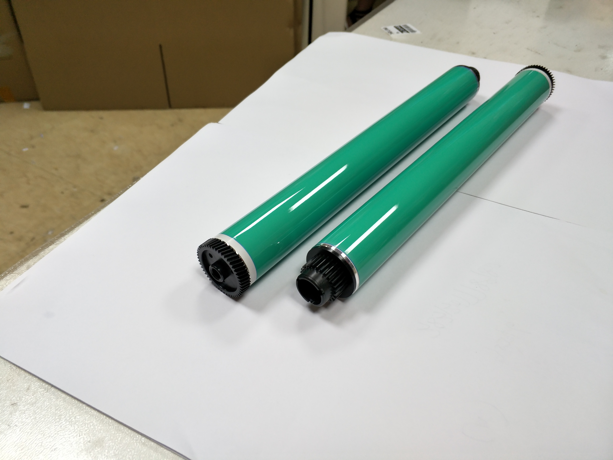
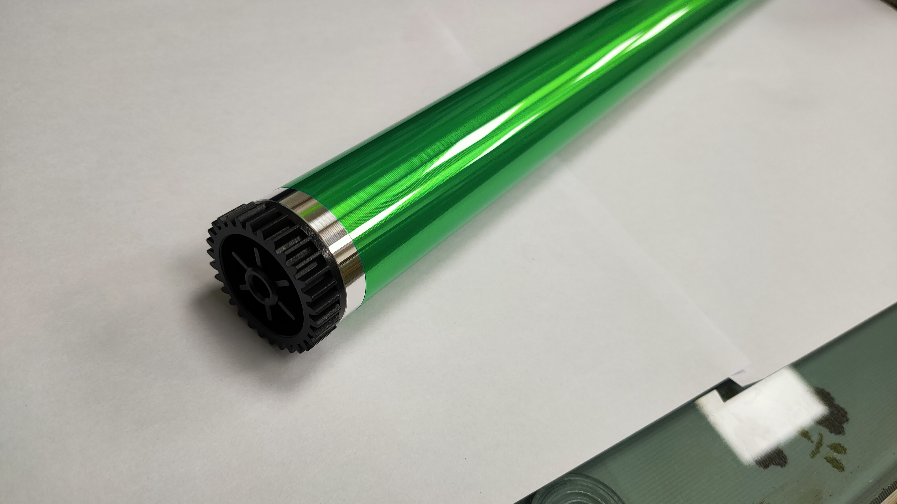
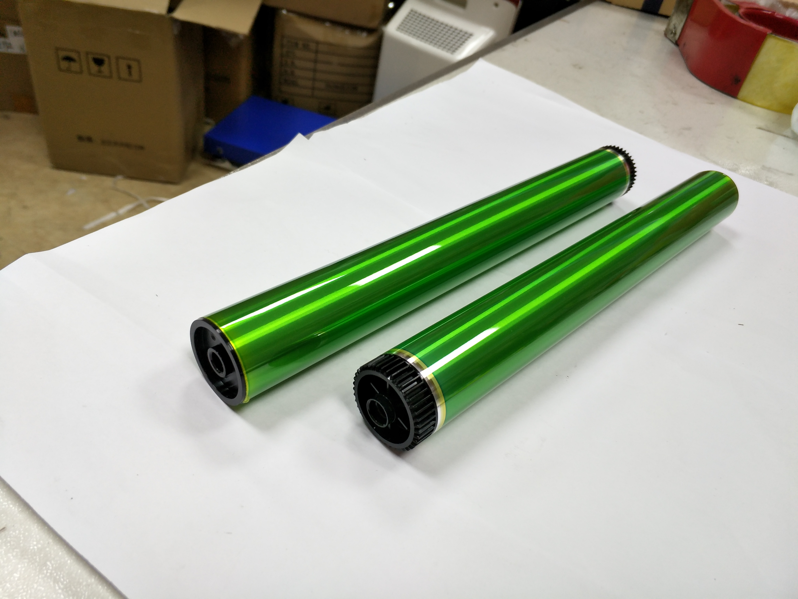
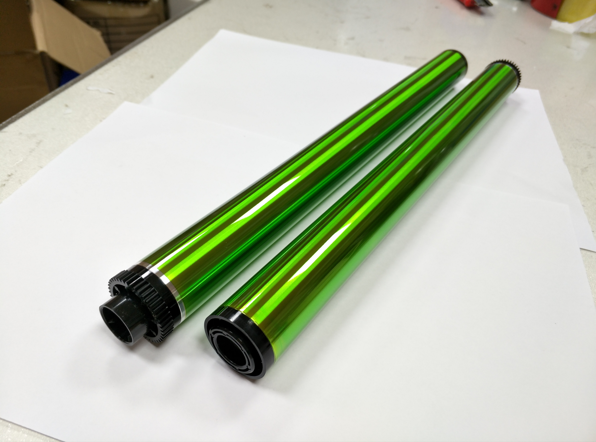
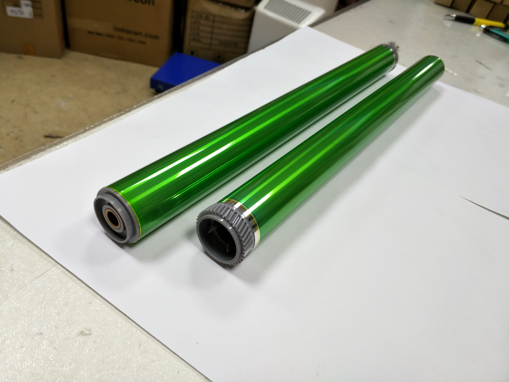

技术前沿
市场观察2026下半年复印机耗材市场趋势分析：兼容鼓芯需求持续增长
随着原装耗材价格上涨和终端用户成本意识增强，兼容鼓芯市场迎来新一轮增长周期。本文从品牌格局、渠道变革和消费趋势三个维度进行深度剖析。
阅读全文 →
产品评测东芝 T-2505 系列兼容鼓芯横向评测：性价比与打印品质的平衡
对市面上 5 款主流东芝 T-2505 系列兼容鼓芯进行横向对比，从打印黑度、均匀度、页寿命和性价比四个维度给出专业评测推荐。
阅读全文 →
行业动态Green Rich 金瑞治新厂房投产：产能提升 60%，品质管控全面升级
金瑞治位于深圳的新建现代化厂房正式投产运行，引入全自动涂布生产线和 AI 视觉检测系统，日产能突破 5 万支，品质稳定性显著提升。
阅读全文 → 技术前沿
技术前沿
新一代有机光导材料技术突破：鼓芯寿命延长 40%
Green Rich 研发团队成功开发新型有机光导（OPC）材料配方，在保持高感光灵敏度的同时将鼓芯服役寿命提升约 40%，预计年底前实现量产。
阅读全文 →
市场观察
⋯